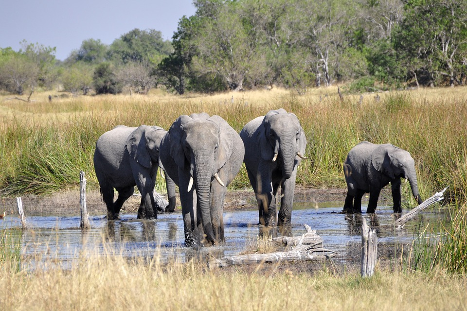

The Okavango Delta: A Natural and Controlled System
This story map explains the different agents that affect the shape and future well being of the Okavango Delta in West Central Africa.
A Natural and Controlled System
With it’s headwaters in the rainy and forested highlands of Angola, the delta snakes is way southeast through the Caprivi Strip of Namibia and into Botswana. The Cuito and Cubango Rivers in the highlands of Angola are together what form the Okavango River which feeds into the detla. These upstream rivers deliver about 2.5 trillion gallons of water each year. The heaviest rains in the Angolan highlands occur in April - October. Because of the seasonality of the precipitation, the delta swells to life when the upstream flood waters arrive and shrinks when the dry season approaches. The permanent wetland area is about 1,200 sq miles and the seasonal wetland is about 3,000 sq miles. The Okavango Delta provides habitat for a rich array of wildlife, as well as supporting the nearly one million people that live within the basin area.

Parks and Reserves
Corvallis is a city in central western Oregon, United States. It is the county seat of Benton County and the principal city of the Corvallis, Oregon Metropolitan Statistical Area, which encompasses all of Benton County. As of the 2010 United States Census, the population was 54,462. Its population was estimated by the Portland Research Center to be 55,298 in 2013.Corvallis is the location of Oregon State University, a large Hewlett-Packard research campus, and Good Samaritan Regional Medical Center.
Biodiversity
Eugene is a city of the Pacific Northwest located in the U.S. state of Oregon. It is located at the southern end of the Willamette Valley, near the confluence of the McKenzie and Willamette Rivers, about 50 miles (80 km) east of the Oregon Coast.
Future Threats: Ecotourism
Oregon was inhabited by many indigenous tribes before Western traders, explorers, and settlers arrived. An autonomous government was formed in the Oregon Country in 1843 before the Oregon Territory was created in 1848. Oregon became the 33rd state on February 14, 1859. Today, at 98,000 square miles (255,000 km²), Oregon is the ninth largest and, with a population of 4 million, 27th most populous U.S. state. The capital of Oregon is Salem, the second most populous of its cities, with 164,549 residents. Portland is Oregon's most populous city, with 632,309 residents, and ranks as the 26th most populous city in the United States. Portland's metro population of 2,389,228 ranks the 23rd largest metro in the nation. The Willamette Valley in western Oregon is the state's most densely populated area, home to eight of the ten most populous cities.